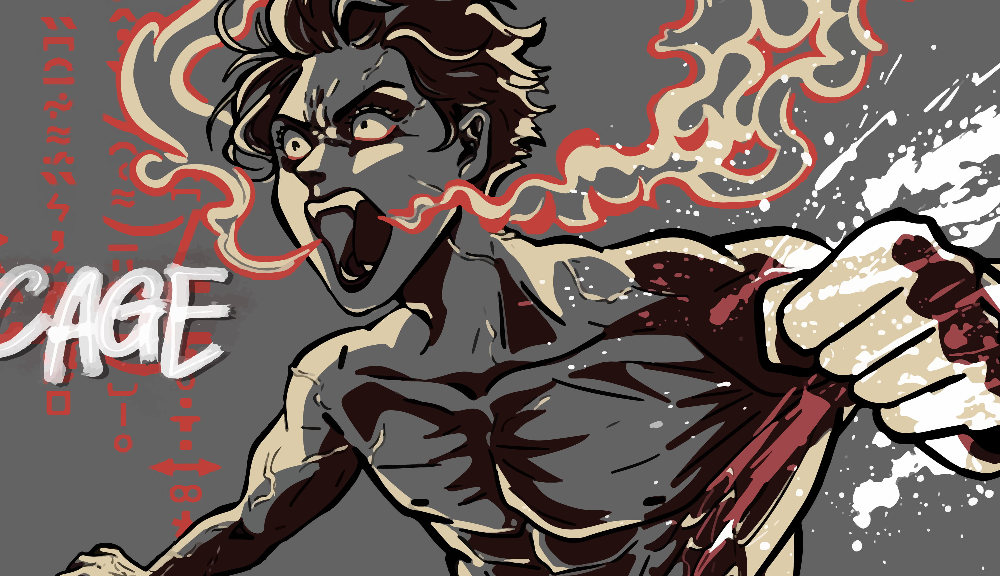
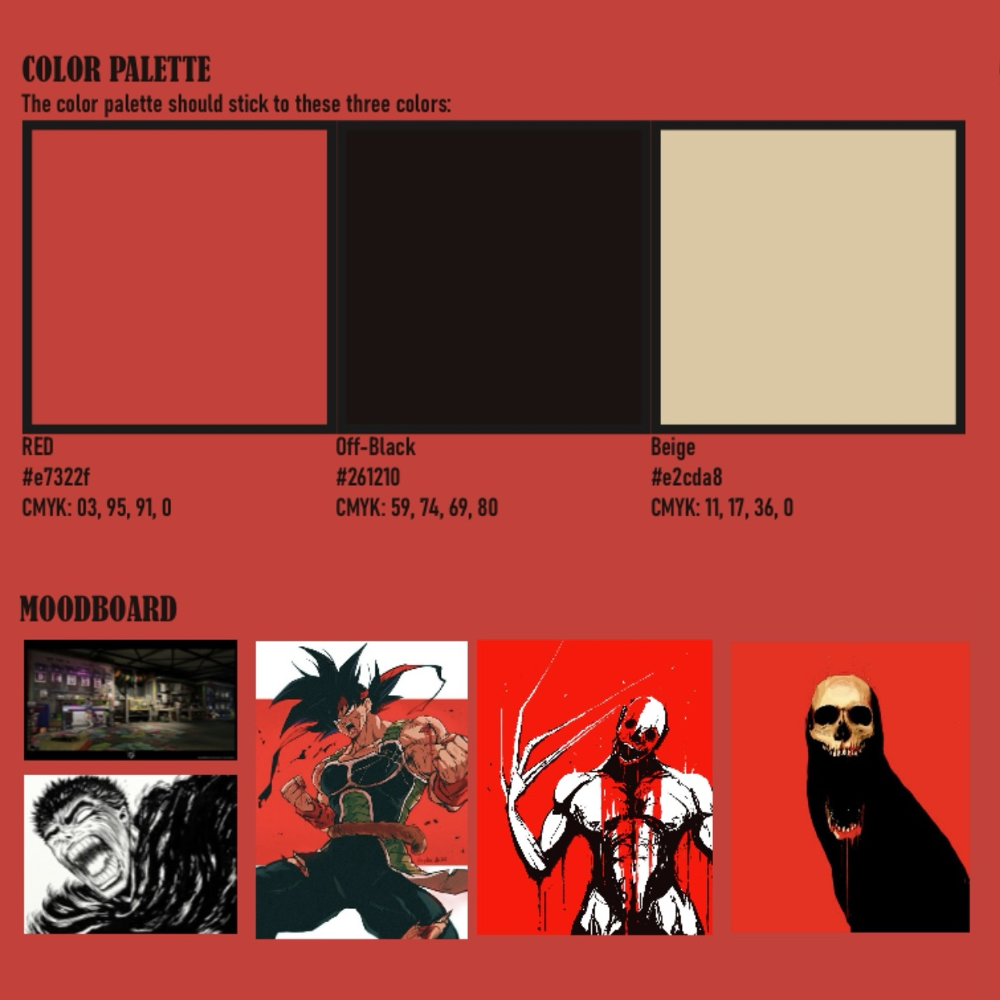
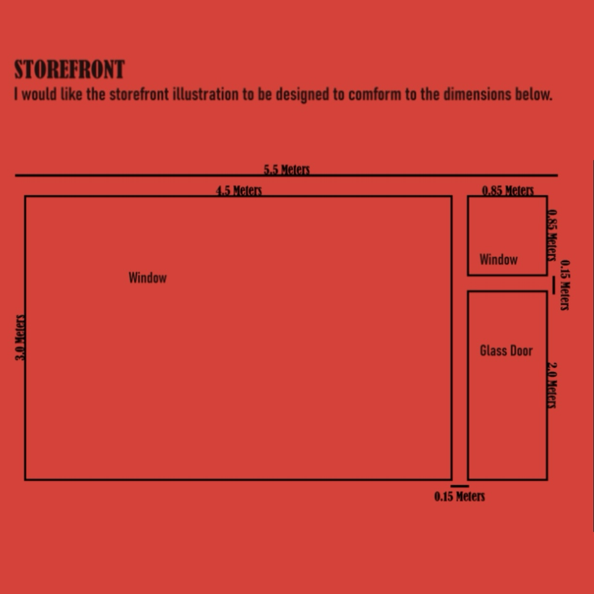
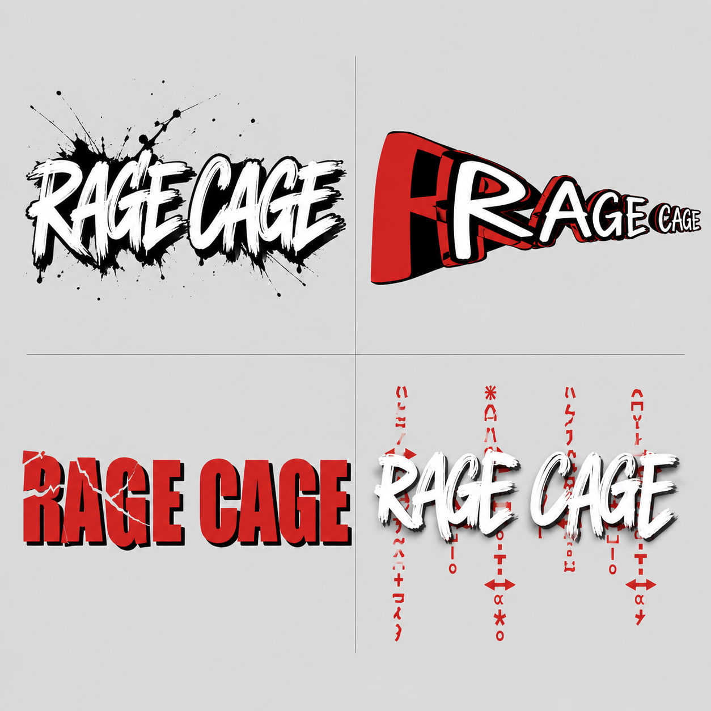
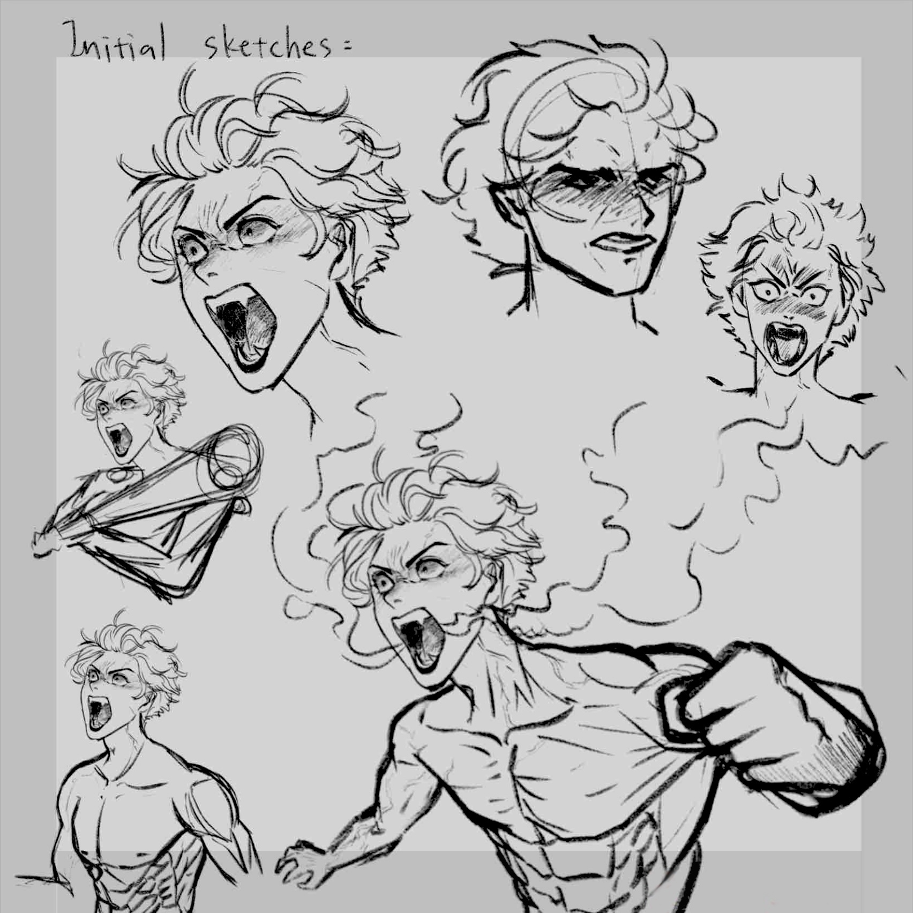
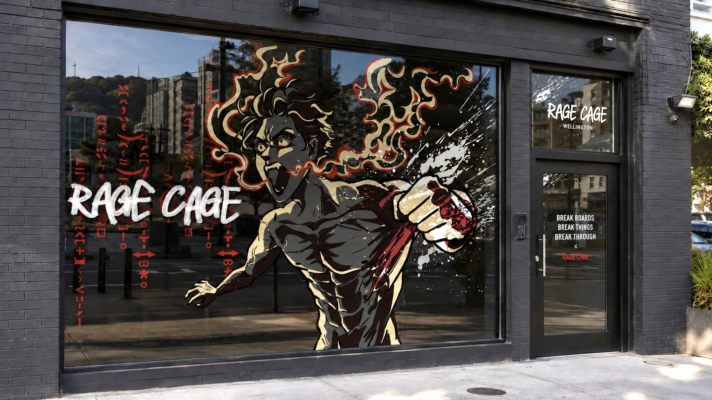

Illustration / Branding / Printing
Storefront Window Design

Project Overview
“Rage Cage” is a New Zealand based startup rage room designed to provide a safe and energetic environment for people to release frustration through breaking objects and physical activity. The project involved designing a large-scale vinyl storefront illustration that would attract attention while reflecting the business’s intense, high-energy identity.
Brief & Context
The target audience for Rage Cage was primarily young adults aged 18–30 seeking exciting entertainment experiences or alternative ways to release stress. Alongside the destructive and energetic aspects of the business, the brand also aimed to promote mental health awareness through its “Break Boards and Breakthroughs” approach.
The client requested a bold manga-inspired storefront illustration using a limited three-colour palette. The design needed to feel dynamic and aggressive through the use of:
- high contrast visuals
- extreme perspective and angles
- expressive linework
- fluid manga-inspired illustration
- industrial visual elements


The artwork also needed to function effectively as a scalable vector graphic for vinyl application.
Process & Design Decisions
To establish the visual direction, I researched Japanese manga and comic illustration styles, focusing particularly on action-oriented “rage manga.” I identified recurring characteristics such as exaggerated anatomy, spiky silhouettes, aggressive facial expressions, rough brush textures, and dynamic foreshortening.
I then developed a series of character sketches exploring posture, movement, and composition. Early concepts experimented with both weapon-based poses and hand-to-hand combat, though after discussion with the client we decided that a punching pose created stronger visual impact and readability from a distance.
One of the biggest challenges throughout the project was constructing an extreme perspective pose that still felt believable and energetic. To refine the composition, I referenced figurative drawing studies and manga panels while experimenting with gesture, anatomy, and camera angles. The final illustration featured:
- exaggerated perspective
- strong black-and-white contrast
- expressive ink and blood splatter effects
- industrial-inspired visual textures
- rough manga-style linework


Following client feedback, I extended the splatter elements across the surrounding door and window panels to create a more immersive and unified storefront composition.
Final Outcome
The completed storefront illustration transformed the Rage Cage venue into a visually striking and recognisable public-facing space. The project strengthened my ability to combine illustration, branding, and environmental design while adapting creative decisions in response to client feedback.

